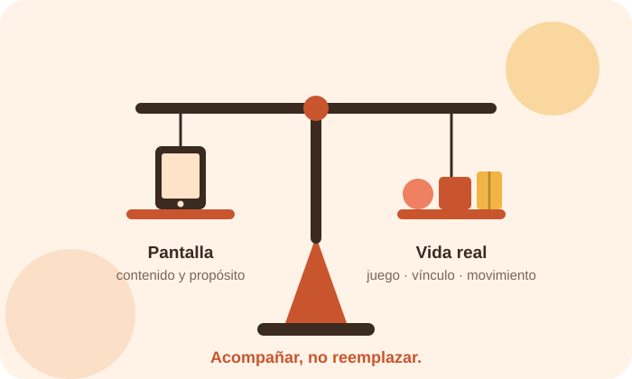

La tecnología forma parte de la vida cotidiana. Una videollamada, una canción para bailar o una aplicación educativa pueden ser experiencias valiosas. Sin embargo, durante la primera infancia el desarrollo ocurre principalmente mediante el vínculo, el juego, el movimiento, la exploración y la interacción con otras personas.
¿Por qué importa el uso adecuado?
El tiempo frente a una pantalla no debería analizarse de forma aislada. También importa qué contenido se consume, con qué propósito, en qué momento del día y qué actividad está desplazando.

Qué dicen los organismos de salud
En 2019 la Organización Mundial de la Salud publicó directrices específicas para menores de cinco años, que relacionan la actividad física, el sueño y el tiempo que los niños pasan sentados frente a una pantalla. Sus orientaciones son claras y conviene conocerlas antes de tomar decisiones en casa o en el aula.
- Menores de un año: no se recomienda ningún tiempo frente a pantallas. En los momentos de quietud, el organismo sugiere leerles o contarles historias.
- Un año: tampoco se recomienda el tiempo sedentario frente a pantallas.
- Dos años en adelante: el tiempo frente a pantallas no debería superar una hora al día, y cuanto menos, mejor.
Estas cifras son un punto de partida, no una meta. La propia OMS insiste en que lo sustituido importa tanto como lo permitido: lo que una pantalla desplaza suele ser juego activo, sueño o interacción con otras personas.
Recomendaciones basadas en evidencia
Priorizar la interacción real
Juego, conversación, lectura, movimiento y contacto con otras personas deben conservar un lugar central.
Elegir contenidos de calidad
Buscar materiales apropiados para la edad, con propósito claro y sin publicidad invasiva.
Acompañar activamente
Mirar, jugar y conversar ayuda a conectar lo digital con la experiencia cotidiana.
Cuidar las rutinas
La tecnología no debería desplazar sueño, alimentación, actividad física ni juego.
Proteger la privacidad
Antes de publicar fotos, nombres, ubicaciones o datos, pensemos en sus consecuencias futuras.
El rol del adulto como mediador
La mediación consiste en tomar decisiones antes, durante y después. El adulto puede explicar, preguntar, relacionar una historia digital con el mundo real y ayudar a reconocer emociones o situaciones problemáticas.
Acompañar significa estar disponible para convertir una experiencia digital en una experiencia de aprendizaje.
Lo que deberíamos preguntarnos como adultos…
💭 ¿Qué necesidad queremos atender cuando ofrecemos una pantalla?
💭 ¿Estamos acompañando o simplemente buscando que el niño permanezca ocupado?
💭 ¿El contenido invita a pensar, crear, conversar o jugar?
💭 ¿Qué ejemplo estamos dando con nuestro propio uso del teléfono?
💭 ¿Estamos protegiendo una huella digital que el niño todavía no puede decidir por sí mismo?
Para profundizar
Las fuentes completas de esta entrada, con sus referencias en formato APA, están reunidas en la página de recursos.
Ver recursos y bibliografía →